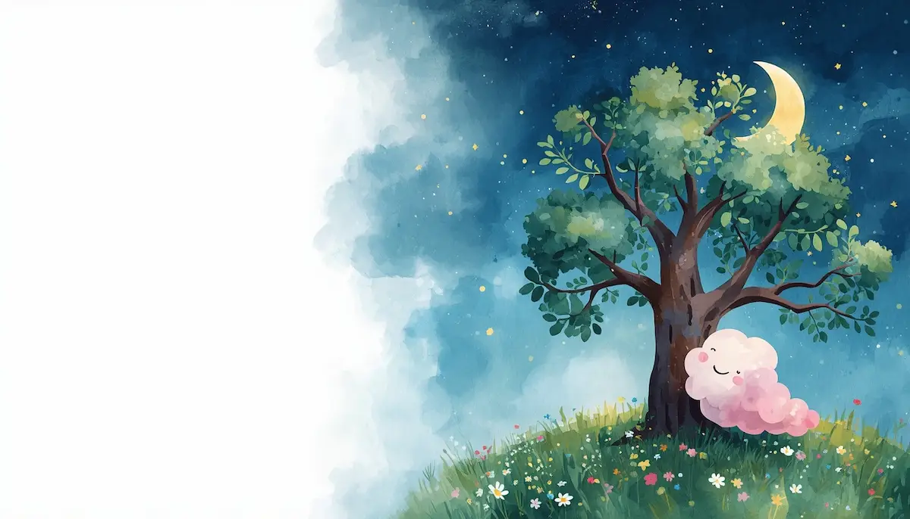
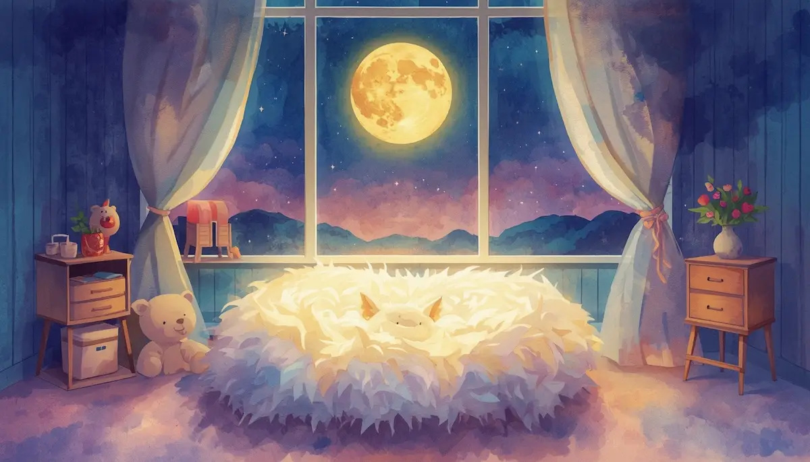
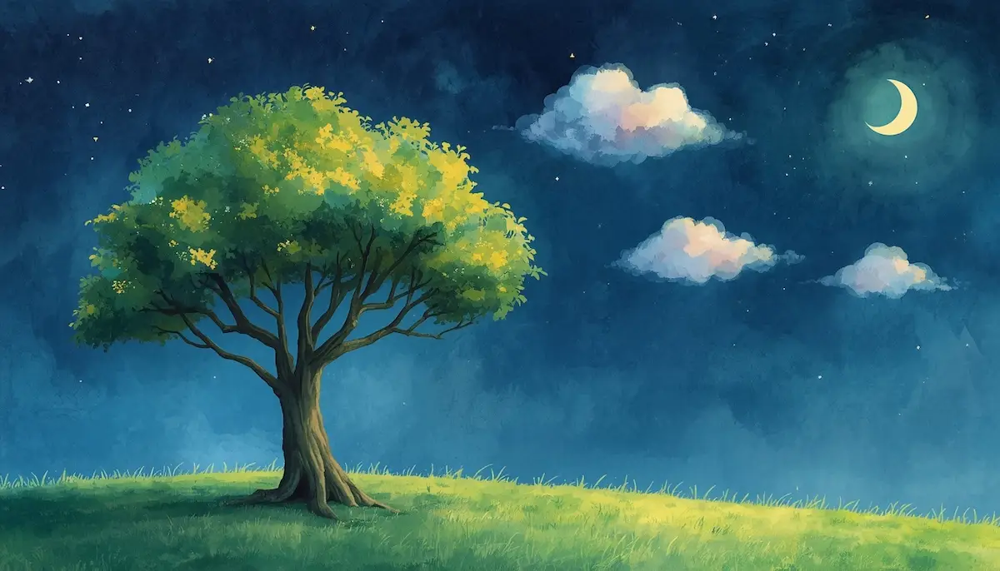
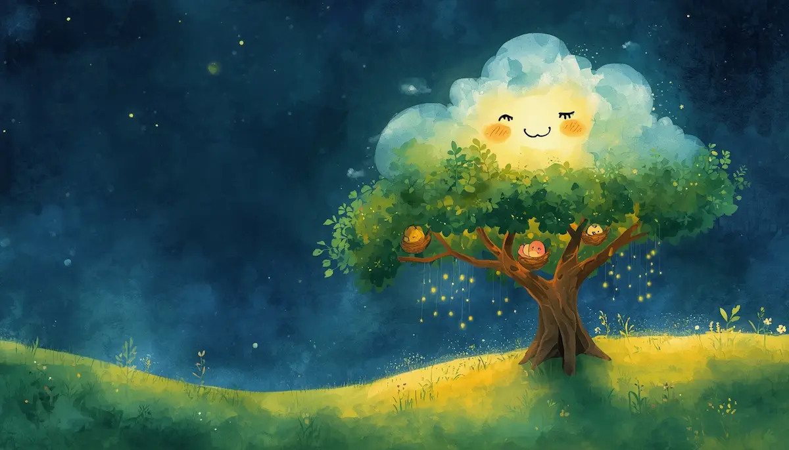
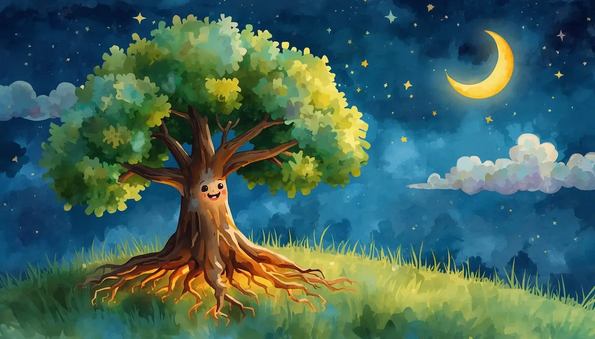
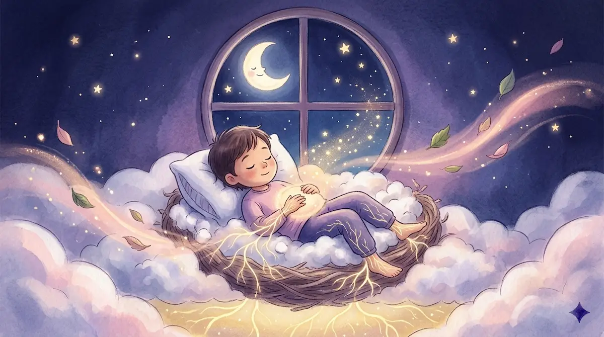

5. El Árbol que quería ser Nube

Introducción: Tu refugio de calma
Hola, pequeño explorador de sueños. Ponte muy cómodo, como si tu cama fuera un nido suave hecho de algodón y luz de luna. Antes de cerrar los ojos del todo, quiero decirte algo que tu corazón necesita escuchar: está bien sentir lo que sientes.

Tal vez hoy te sentiste un poco pequeño, o tal vez deseaste ser diferente. Quiero que sepas que todas esas emociones son como pequeñas visitas en tu pecho; las recibimos con un abrazo, les damos las gracias y luego las dejamos pasar.

El deseo de volar
Imagina que en medio de un prado verde y tranquilo vive un árbol joven de ramas fuertes y hojas brillantes. Este árbol pasa los días mirando al cielo, observando a las nubes. "¡Qué suerte tienen!", pensaba. "Ellas son ligeras, viajan a donde quieren".
El árbol se sentía triste porque sus raíces estaban hundidas. Pensaba que estar "atado" al suelo le impedía ser libre. A veces, tú también puedes sentirte así, como si quisieras volar lejos de lo que te preocupa.
Tu valor real

Un día, una nube muy sabia se detuvo sobre sus ramas y le susurró: "Pequeño amigo, yo viajo por todo el mundo, pero no tengo un hogar. Tú, en cambio, eres el hogar de muchos". El árbol vio que en sus ramas vivía una familia de pájaros segura bajo su sombra.

"Yo soy hermosa porque floto, pero tú eres valioso porque sostienes. Tu valor no está en lo que te falta, sino en el amor que das siendo exactamente quien eres". El árbol comprendió que ser árbol era su superpoder.
Cierre: Aceptación y raíces de amor
El árbol ya no quiso ser nube. Ahora, sonríe a sus amigas, sabiendo que cada uno tiene su lugar especial. Tú eres único, y el simple hecho de ser tú ya es un regalo para el mundo.

Ejercicio de relajación
Para terminar, imagina que eres ese árbol: tensa tus manos y hombros con fuerza, siente tu raíz... y ahora suéltalo todo, volviéndote blandito como una hoja que cae. Inspira luz dorada hacia tu barriga y suéltala despacio. Buenas noches, pequeño gran árbol.